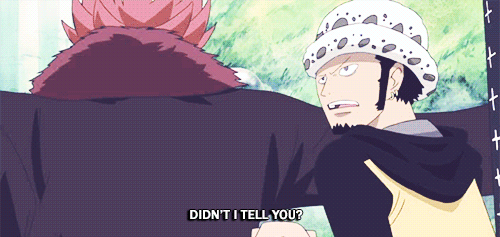

- Archipiélago Sabaody:

Es uno de los piratas del grupo de los Once Supernovas. Es un pirata originario del North Blue y capitán de los piratas de Heart.
Se ofrece una recompensa de 200.000.000 berries por su cabeza. Eustass Kidd revela que no tiene buenos rumores sobre él, al igual que sus modales con las personas. Esto lo demuestra el propio Law al hacerle una grosería al propio Kidd apenas al saludarlo. Law también es el que advierte a Luffy que debe tener cuidado, pues por alguna razón, los marinos ya estaban rodeando la Casa de Subastas aún antes del incidente con el Noble Mundial.
Junto a Kidd, se une a Luffy para derrotar a los marinos que los atacan fuera de la Casa de Subastas. Después de derrotarlos, Law prosigue su escape, pues no desea enfrentarse a un Almirante.
Sin embargo, en su huida se tropieza una vez más con Kidd, quien estaba luchando contra un Pacifista. Ambos piratas inician la lucha contra el Pacifista. Se desconoce el desenlace de la misma, pero al parecer consiguió escapar del robot pues más tarde, al igual que el resto de supernovas, se le ve observando la guerra entre la tripulación y aliados de Barbablanca contra la Marina en las gigantescas pantallas de Shabody y comentando al respecto.
Más adelante Trafalgar Law reaparece en Marineford, surgiendo de un submarino, y ordena a Buggy que le entrege a Jimbei y sobre todo a Luffy para curarlos, aclarando que aunque en el futuro Luffy pueda ser su enemigo, él, siendo doctor, lo ayudará a salir vivo de esa guerra, ya que sería penoso que muriera allí y sin poder defenderse.
 Más tarde Boa Hancock e Ivankov llegan a través de barcos de la Marina, Law sale del submarino e informa que hizo todo lo que podía y que Luffy continúa en condiciones críticas. Cuando Ivankov le preguntó si era un amigo de Luffy le responde que no y que tampoco tenía la obligación de salvarlo. Se ofrece para hacer una excusa de por qué está cuidando a Luffy, Ivankov solo afirma que él no tenía necesidad ya que Law solo estaba siguiendo sus instintos. Jinbei entonces se despierta y le da las gracias a Law por salvarlos a él y a Luffy, solo para que éste le diga sin rodeos a Jinbei que necesita descansar o morirá.
Más tarde Boa Hancock e Ivankov llegan a través de barcos de la Marina, Law sale del submarino e informa que hizo todo lo que podía y que Luffy continúa en condiciones críticas. Cuando Ivankov le preguntó si era un amigo de Luffy le responde que no y que tampoco tenía la obligación de salvarlo. Se ofrece para hacer una excusa de por qué está cuidando a Luffy, Ivankov solo afirma que él no tenía necesidad ya que Law solo estaba siguiendo sus instintos. Jinbei entonces se despierta y le da las gracias a Law por salvarlos a él y a Luffy, solo para que éste le diga sin rodeos a Jinbei que necesita descansar o morirá.